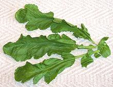

SAFARI
Users
Arugula / Rocket
[Arugula (us), Rocket (uk), Roquette (fr), Rucola (it), Rughetta (it), B. Eruca sativa (garden) B. Eruca vesicaria (wild)]
This popular salad green of Mediterranean origin has been used since at least Roman times. Almost unknown in the U.S. a couple decades ago it is today the "must have" green for yuppie salads, so supermarkets stock pre-cut and washed bags of "baby" arugula. The leaves are small and tender but have a distinctly mustardy bite, backed by an unusually complex flavor.
Some varieties have leaves less deeply cut than the photo specimen and
the leaves are very deeply cut on the wild version. The most beautiful
bunch of Arugula I've ever purchased was from Whole Foods Market - and
it was so flavorless it was unusable. In Italy Arugula is used in soups,
but cooked it looses almost all its flavor. The term "Rocket" is also
loosely used for a number of other peppery herbs.
Details and Cooking.
Watercress
[Kotem (Armenia); B. Nasturtium nasturtium-aquaticum and N. microphyllum]
Watercress, native to Europe and Western Asia, has been cultured and eaten
since prehistoric times. Its relatively mild mustardy bite is a welcome
addition to green salads and in sandwiches, but it's also used cooked in
soups and other recipes. Depending on how it was grown and cut some of
the stems can be quite large. All but the largest can be used along with
the leaves as they are hollow, tender and have much the same flavor as the
leaves. Details and Cooking.
Cress
[Genus Lepidium]
This genus contains 175 to 220 species worldwide (depending on expert consulted). Beside the members of this genus listed below, many others are edible with similar taste, and may be used locally. One in particular (Tall Whitetop; Lepidium latifolium) is notable, not for its edibility (though it is edible), but because it is a very aggressive and troublesome invasives in North America and elsewhere.
Garden Cress[Pepper Grass, Pepperwort, Mustard and Cress, B. Lepidium sativum]
Used similarly to Watercress this green can
tolerate a wider range of moisture conditions so can be grown either
in the garden or hydroponically, preferring a slightly alkaline
environment. It is said to be in great demand in some regions but I
have never seen it in Southern California where the broader leafed
cress and watercress are widely available year round. Garden cress
can grow to about 24 inches high and when allowed to flower it
produces fruits which when immature are similar to caper berries.
Photo by Krish Dulal distributed under license Creative Commons
Attribution-ShareAlike v3.0 Unported.
Shahee / Tartizak [Persian Broadleaf Cress; various spellings: Shahi, Chahe, Shahe; Lepidium sativum]
This peppery herb, a broadleaf variety of Garden Cress, is very popular
in the Middle East, particularly Iran. I have found it, variously
spelled, in Southern California produce markets serving Armenian,
Middle Eastern and Persian communities. It is popular in salads,
sandwiches and particularly in the Persian fresh herb plate, Sabzi
Khordan, which accompanies most meals in Iran. It can also be a last
minute addition to soups. This is a dry land cress, lightly peppery and
less intense than Watercress, with leaves that are broader and thinner.
The seeds are also used, and like other mustards, develop flavor and
hotness after being being crushed and moistened with water.
Pepper Cress[Pepper Grass, Pepperwort, B. Lepidium possibly spc. L. ruderale, or may be a variety of L. sativum]
Of the many very different plants called "Pepper Cress", this one has
very fine, delicate leaves and a peppery taste quite a bit stronger
than that of Watercress. It can be a very good accent addition to
salads. The photo specimen were obtained from a specialty grower at
a farmer's market in Los Angeles.
Field Pepperweed[Lepidium campestre] This plant, probably originating in Eastern Europe and Western Asia, has become an invasive in North America. It is found in most of the southern provinces of Canada and most states of the United States, but not Alaska or Texas. It grows mostly on disturbed ground, as a basal rosette of long leaves, sending up flower stalks to as much as 2 feet high. The stalks have small, arrow shaped leaves all the way up, and they branch into multiple stalks near the top. Young leaves and shoots from the basal rosette can be eaten raw in
salads or boiled for 10 minutes. Older leaves need to be boiled longer
and in several changes of water. Young seed pods, a little less than
1/4 inch long, can be used as a spice,
having a taste like a combination of black pepper and mustard. They
are particularly useful in soups and stews. Seeds from mature pods
can be used as a black pepper substitute.
Photo by Fornax distributed under license Creative
Commons
Atribución-CompartirIgual 3.0 Unported.
|
Upland Cress
[American Cress, Bank Cress, Black Wood Cress, Belle Isle Cress, Bermuda Cress, Early Yellowrocket, Early Wintercress, Scurvy Cress, Creasy Greens, Land Cress; Barbarea verna]
This plant is native to southwestern Europe, but is now found in many
of the eastern states of the United States, and in the west coast
states, but distribution is patchy. This cress has long been
cultivated in England, and some is cultivated in Florida. This cress
is a reasonable substitute for watercress, used in salads and
sandwiches. The leaves look much the same, but it's a bit stronger
in taste. It is also cooked like spinach and used in soups and with
fish. It can be grown with a lot less water than watercress, but still
needs full sun and moist ground.
Garlic Mustard
[Garlic root, Hedge garlic; Sauce-alone, Jack-by-the-hedge, Jack-in-the-bush, Penny Hedge, Poor Man's Mustard; Alliaria petiolata]
Native to Europe, Central Asia as far as northern India, and also western North Africa, Garlic Mustard is a very long used seasoning. We have evidence it was so used in the Baltic region about 6000 years ago. With a flavor similar to a combination of garlic and mustard, the leaves are chopped and added to salads and sauces. Flowers and young seed pods are sometimes included. In France the seeds are used as a spice.
Garlic Mustard was brought to North America as a culinary herb
during the 1860s, and is now a troublesome, very difficult to eradicate
invasive, infesting 27 states, mostly Midwest and Eastern, but also
Washington, Oregon and just a bit in Alaska. Also British Columbia,
Ontario, Quebec, New Brunswick and Nova Scotia in Canada, but we have
none here in California.
Photo by
Sannse at
English Language
Wikipedia distributed under license
Creative Commons
Attribution 3.0 Unported, Attribution required.
Alyssum
[Sweet alyssum; Lobularia maritima (obs. Alyssum maritimum)]
Native to the Canary Islands, Madeira, Cape Verde, and the Bay of
Biscay, this plant has been widely naturalized as a decorative, including
in North America. It is an annual, but can be a short lived perennial
under just the right conditions. Flowers, leaves and tender stems can be
eaten raw or cooked.
Photo by 4028mdk09 distributed under license Creative
Commons
Attribution 3.0 Unported.
Scurvy Grass
[ Cochlearia officinalis | English Scurvy Grass;
Cochlearia anglica | Danish / Early Scurvy Grass;
Cochlearia danica]
Cochlearia officinalis | English Scurvy Grass;
Cochlearia anglica | Danish / Early Scurvy Grass;
Cochlearia danica]
Native to Western Europe, mainly along coasts and in mountains, this
plant is very high in vitamin C, thus is a bit sour. It is also
somewhat bitter, but was very important for preventing or curing
scurvy caused by lack of vitamin C on long ocean voyages. It was also
a common souring agent until citrus became common in Europe. It
was spread inland due to salting of roads in the winter. Seeds washing
off vehicle wheels had little competition because scurvy grass could
stand the salty soil at the side of roads. Note that there are
unrelated plants also called "scurvy grass".
Photo by Karelj distributed under license
Creative Commons
Attribution 3.0 Unported.
Wild Rocket
[Perennial wall-rocket, Sand rocket, Lincoln weed, White rocket; Seeds marketed as Wild Italian Arugula, Sylvetta Arugula; Diplotaxis tenuifolia]
This plant is native to Europe and Western Asia, but is now found in
temperate regions over much of the world. The taste is similar to
Arugula. Commercial cultivation is
currently increasing rapidly as it is being included as "baby leaf
rocket" (and similar names), mixed with other "baby leaf" greens to
make the baby leaf salads so favored by yuppies. Yuppies will pay
extra for "baby" anything - as proven by "baby carrots" which are
machined out of large carrots by automatic lathes.
Photo by AnRo0002 contributed to the Public Domain by
Creative Commons
CC0 Universal Public Domain Dedication.
Chaantruk
[Wavy Bittercress; Chaantruk (Manipur, India); Cardamine flexuosa]
This low but erect (to almost 12 inches) herb is native to temperate
Europe and Asia from England to Japan. Some grows as far north as
Finland but only in warmer micro-climates. It is an invasive in much
of eastern United States and Canada, and appears in California and
Washington state. Leaves are edible raw or
cooked and have a sharp peppery taste. They are used as a garnish
and herbal ingredient in the cuisine of Manipur in the far east of
India (east of Bangladesh). Manipur cuisine does not use curry spices,
but many local herbs and plenty of chilis. The roots are also edible
raw or cooked. This plant is listed on
Plants for a Future.
Photo by Fornax distributed under license
Creative Commons
Attribution 3.0 Unported.